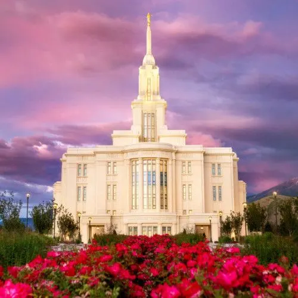

Temple Album
☰
Home
Old
New
Large
Small
Temple Gallery
A collection of beautiful temples from around the world.

Payson Temple
Washington DC Temple
Trujillo Peru Temple
Provo City Center Temple
Bogotá Colombia Temple
Billings Montana Temple
Fiji Temple
Freiberg Germany Temple
Detroit Michigan Temple